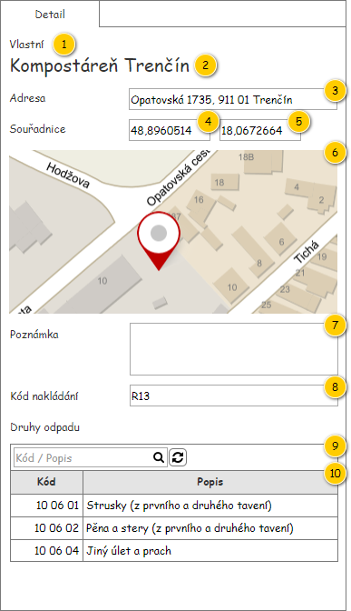
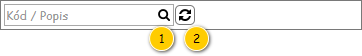

Panel Detail likvidačního místa slouží k zobrazení údajů o entitě Likvidační místo.

| Callout | Komponenta | Nadpis | Typ komponenty | Příklad hodnoty | Hodnota | Výchozí hodnota | Formát | Zpřístupněná | Viditelná | Chování | Validace | Poznámka |
|---|---|---|---|---|---|---|---|---|---|---|---|---|
| 1 | Vlastní Likvidační místo | – | Label | Vlastní | Entita Likvidační místo. | – | Pokud
Jinak:
| – | Vždy | – | – | – |
| 2 | Název likvidačního místa | – | Label | Kompostáreň Trenčín | Entita Likvidační místo. | – | – | Vždy | – | – | – | |
| 3 | Adresa | Adresa | Label | Opatovská 1735, 911 01 Trenčín | Entita Adresa – atribut Adresa entity Likvidační místo. | – | Pokud není dostupné Číslo orientační:
| – | Vždy | – | – | – |
| 4 | Zeměpisná šířka | Souřadnice | Label | 48,8960514 | Entita Likvidační místo. | – | – | Vždy | – | – | – | |
| 5 | Zeměpisná délka | – | Label | 18,0672664 | Entita Likvidační místo. | – | – | Vždy | – | – | – | |
| 6 | Mapa | – | Map | – | Entita Likvidační místo. | – | Zobrazení souřadnic v mapě. | Nikdy | Vždy | – | – | – |
| 7 | Poznámka | Poznámka | Label | V neděli zavřeno. | Entita Likvidační místo. | – | – | Vždy | – | – | – | |
| 8 | Nástrojová lišta | Druhy odpadu | Viz Nástrojová lišta. | – | – | – | – | Vždy | Vždy | Viz popis tabulky Druhy odpadu. | – | – |
| 9 | Druhy odpadu | – | Grid | – | Entita Druh odpadu likvidačního místa. Dostupné jsou pak takové Druhy odpadu likvidačního místa, které splňují všechny dále uvedené podmínky zároveň:
| – | Viz popis tabulky: Druhy odpadu. | Nikdy | Vždy | – | – | – |
Pro zobrazení podporovaných druhů odpadu likvidačního místa je použita běžná tabulka, viz 700UI01: Komponenty – tabulka. Z toho vyplývají jak její základní vlastnosti, tak i výchozí nastavení (např. počet záznamů, které je možné označit).

| Callout | Komponenta | Nadpis | Typ komponenty | Příklad hodnoty | Hodnota | Výchozí hodnota | Formát | Zpřístupněná | Viditelná | Chování | Validace | Poznámka |
|---|---|---|---|---|---|---|---|---|---|---|---|---|
| 1 | Textový filtr | – | Full Text Filter (viz Ovládací prvky třetích stran) SearchBox | – | – | – | Pokud není v rámci ovládacího prvku zadán hledaný text, jsou na pozadí (placeholder) vypsány názvy sloupců, podle kterých je filtrováno (viz sloupce Chování). Mezi jednotlivými názvy sloupců je použit oddělovač: „/“. Tento text je zobrazován i v rámci bublinkové nápovědy ovládacího prvku. Chování je pak řešeno v rámci použité komponenty. | Vždy | Vždy | Psaním filtruje řádky dle sloupců:
Poznámka: Ve sloupcích je vyhledáváno fulltextově. | – | – |
| 2 | Obnovit data | – | Button
| – | – | – | – | Vždy | Vždy | Načte aktuální data pro tabulku. | – | – |
Poznámka: Nastavení tabulky je ukládáno v rámci uživatelského nastavení.
| Sloupec | Nadpis | Možnost editace | Komponenta | Datový typ | Příklad hodnoty | Hodnota | Výchozí hodnota | Formát | Možnosti sloupce | Zpřístupněný | Viditelný | Chování | Validace | Poznámka |
|---|---|---|---|---|---|---|---|---|---|---|---|---|---|---|
| Kód odpadu | Kód | Ne | TextBox | Text | 10 06 04 | Entita Druh odpadu – atribut Druhy odpadu entity Likvidační místo – atribut Likvidační místo entity Druh odpadu likvidačního místa. | – |
|
| Nikdy | Vždy | – | – | – |
| Kategorie odpadu | Kategorie | Ne | TextBox | Text | N | Entita Druh odpadu – atribut Druhy odpadu entity Likvidační místo – atribut Likvidační místo entity Druh odpadu likvidačního místa. | – |
| Nikdy | Vždy | – | – | – | |
| Popis odpadu | Popis | Ne | TextBox | Text | Jiný úlet a prach | Entita Druh odpadu – atribut Druhy odpadu entity Likvidační místo – atribut Likvidační místo entity Druh odpadu likvidačního místa. | – |
| Nikdy | Vždy | – | – | – | |
| Kód nakládání | Kód nakládání | Ne | TextBox | Text | V | Entita Druh odpadu likvidačního místa. Kód nakládání nakonec není evidován jako číselník. | – |
| Nikdy | Vždy | – | – | – |
| Odkaz | Stručný popis změny |
|---|---|
| Nástrojová lišta | Revize komponenty pro fulltextový filtr (naznačeno modře). |
| Odkaz | Stručný popis změny/doplnění |
|---|---|
| Struktura tabulky | Revize způsobu zobrazení kódu nakládání (naznačeno růžově). |
| Odkaz | Stručný popis změny/doplnění |
|---|---|
| Rozložení | Odebrání informace o kódu nakládání, revize způsobu získání informací pro tabulku s druhy odpadu (naznačeno modře). |
| Struktura tabulky | Revize dostupných informací v tabulce, doplnění možnosti práce se sloupci tabulky (naznačeno modře). |
| Odkaz | Stručný popis změny/doplnění |
|---|---|
| Druhy odpadu | Doplněny obecné informace o použité tabulce (naznačeno modře). |
Jedná se o změny, které proběhnou v rámci M9.
| Odkaz | Stručný popis změny/doplnění |
|---|---|
| Struktura tabulky | Doplněn sloupec s kategorií odpadu. |